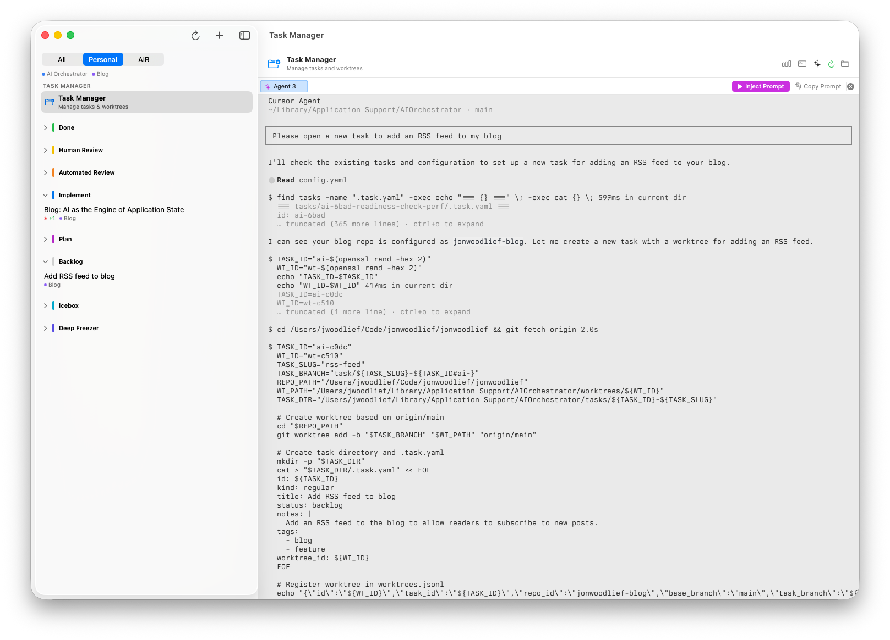

I have been all in on agentic coding recently. It allows me to focus on the parts of programming I'm really interested in—mostly systems design and data structures—while greatly speeding up the implementation phase. One tool that I've found very helpful is git worktrees, which enables me to create new directories for feature branches on my applications, so that I can have multiple explorations going on against the same repo without risk of collision.
Of course, doing development in worktrees adds some overhead, including keeping track of all of these directories and what state they're in. This led me to build an application to manage these worktrees and their agentic coding sessions.
Sidenote: I'm using libghostty to build this. It isn't released yet but I pulled it from the Ghostty source code and it's amazing.
This seemed daunting at first. I'd need a UI to create and edit the tasks, create and manage the worktrees, orchestrate merges, and so on.
While mocking the application up, I decided to model the task list and worktrees as files on my Unix filesystem, and use an AI agent to manage it. I quickly realized that this was an incredible interface for my application—it was fast, reliable, and easily extensible. If I had problems with the behavior, I could simply edit the prompt or the AGENTS.md file.
There's a Linus Torvalds quote I keep coming back to:
With AI as the engine of application state, this becomes literally true. I defined the data structures—tasks, worktrees, their relationships—and documented them in a markdown file. The AI handles everything else. All the plumbing that would normally connect a UI to those data structures, the agent figures out dynamically.
This is where the approach really shines. When I want to change a workflow, I edit the documentation. Want a different merge process? Update the instructions. Want stricter validation? Add a constraint. The agent reads the updated docs and adapts.
Users who can write documentation can customize their workflows. No code changes, no deployments.
The challenge with this approach is sourcing the AI. Most people access AI through vendor APIs, and integrating that into your application has real friction—API keys, subscriptions, security implications of giving authentication to third-party systems.
My bigger concern is that people will source AI from closed systems that won't offer interoperability. This feels similar to how the internet has developed, with most content flowing into walled gardens like YouTube, Instagram, and Discord rather than the open web. If AI follows the same pattern—proprietary models, closed ecosystems, vendor lock-in—we'll lose the flexibility that makes this approach powerful in the first place.
For now, this works well for developer tools and personal productivity apps where you control the environment. The real question is whether AI remains open enough for this pattern to scale beyond that.